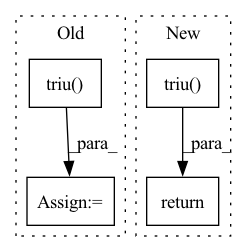

Pattern ID :7201
Before Change
// Compute just the projection from SO(n) / SO(k)
n, m = x.size()
low = x[:, :m//2].tril(-1)
up = x[:, :m//2 + m%2].triu( 1)
// Compute the reflection of low
low = low.flip(-1).flip(-2)
// S is square upper triangular
S = torch.cat([up, low], dim=1)After Change
if self.inverted:
x = x.t()
low = x[:, :self.n//2].tril(-1)
up = x[:, :self.n//2 + self.n%2].triu( 1)
// Compute the reflection of low
low = low.flip(-1).flip(-2)
// S is square upper triangular
S = torch.cat([up, low], dim=1)
return super().frame(S, base)
def trivialization(self, x, base):
// Size of the original matrixIn pattern: SUPERPATTERN
Frequency: 3
Non-data size: 4
Instances Fragment ID: 24188533
Project Name: lezcano/geotorch
Commit Name: ada013178cb25a391184cd6ffcd920ccc2109e69
Time: 2020-03-11
Author: lezcano-93@hotmail.com
File Name: mantorch/orthogonal.py
M Class Name: Stiefel
N Class Name: Stiefel
M Method Name: frame(3)
N Method Name: frame(3)
M Parent Class: SO
N Parent Class: BaseManifold
M File Name: mantorch/orthogonal.py
N File Name: mantorch/orthogonal.py
M Start Line: 144
M End Line: 167
N Start Line: 95
N End Line: 102
Before Change
tensor = ori_tensor.permute(0, 3, 1, 2).contiguous()
uppder_ones = (
torch.ones([tensor.size()[-1], tensor.size()[-1]])
.long()
.triu()
.to(ori_tensor.device)
)
upper_diag_ids = torch.nonzero(uppder_ones.view(-1), as_tuple=False).view(-1)
// flat_tensor: (batch_size, matrix_size * matrix_size, hidden_size)
flat_tensor = tensor.view(tensor.size(0), tensor.size(1), -1).permute(0, 2, 1)
tensor_upper = torch.index_select(flat_tensor, dim=1, index=upper_diag_ids)After Change
:return: (batch_size, matrix_size + ... + 1, hidden_size)
bs, matrix_size, matrix_size, hidden_size = tensor.shape
mask = torch.ones(matrix_size, matrix_size, device=tensor.device).triu() .bool()[
None, :, :, None]
return tensor.masked_select(mask).reshape(bs, -1, hidden_size)
def forward(self, seq_hiddens):
Fragment ID: 24188532
Project Name: junnyu/gplinker_pytorch
Commit Name: 646f478a00ca38cb2975716cba55ca2aee83b980
Time: 2022-02-28
Author: 573009727@qq.com
File Name: utils/components.py
M Class Name: HandshakingKernel
N Class Name: HandshakingKernel
M Method Name: upper_reg2seq(2)
N Method Name: upper_reg2seq(2)
M Parent Class: nn.Module
N Parent Class: nn.Module
M File Name: utils/components.py
N File Name: utils/components.py
M Start Line: 247
M End Line: 258
N Start Line: 247
N End Line: 250
Before Change
"mask out subsequent position"
attn_shape = (1, size, size)
subsequent_mask = np.triu( np.ones(attn_shape), k=1) .astype("uint8")
return torch.from_numpy(subsequent_mask) == 0
After Change
def subsequent_mask(_size):
return torch.triu( torch.ones(1, _size, _size), diagonal=1) == 0
class MultiHeadAttention(torch.jit.ScriptModule): Fragment ID: 24188534
Project Name: wenwenyu/master-pytorch
Commit Name: fb5b4879dfa3e77d7193e531e6c0f03a8e6c13c8
Time: 2021-05-20
Author: 744351893@qq.com
File Name: model/transformer.py
M Class Name: AnonimousClass
N Class Name: AnonimousClass
M Method Name: subsequent_mask(1)
N Method Name: subsequent_mask(1)
M Parent Class:
N Parent Class:
M File Name: model/transformer.py
N File Name: model/transformer.py
M Start Line: 168
M End Line: 170
N Start Line: 21
N End Line: 21